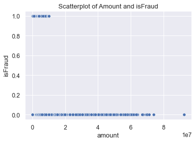
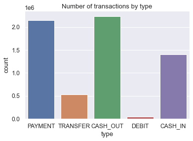
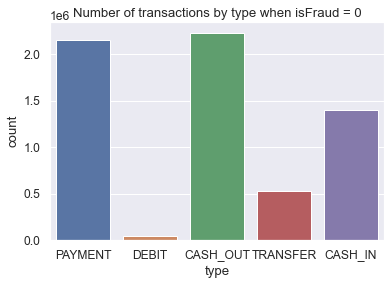
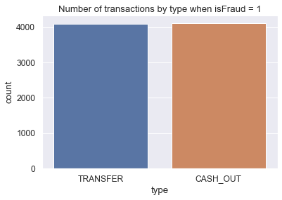
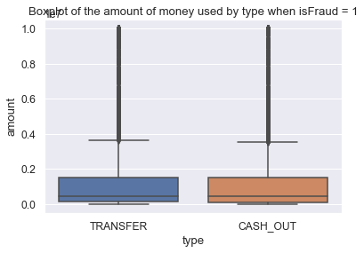
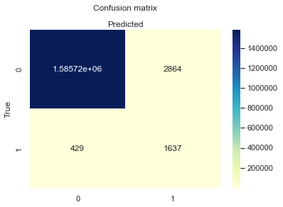

Dataset consists of 6362620 rows of transactions information with a columns such as step, type, amount, nameOrig, oldBalanceOrg and etc. Name,datatype of each column you can find in the table below.
| # | Column name | Datatype | What information contains |
|---|---|---|---|
| 1 | step | int64 | Continuous variable, includes number of step of transaction |
| 2 | type | object | Categorical variable, inludes information about transaction type(payment,transfer and etc.) |
| 3 | amount | float64 | Continuous variable, includes amount of money used in transaction |
| 4 | nameOrig | object | Categorical variable, includes name of origin account from which transaction was made |
| 5 | oldbalanceOrg | float64 | Continuous variable, includes old balance of origin account from which transaction was made |
| 6 | newbalanceOrig | float64 | Continuous variable, includes new balance of origin account after transaction was made |
| 7 | nameDest | float64 | Categorical variable, includes name of destination account to which transaction was made |
| 8 | oldbalanceDest | float64 | Continuous variable, includes old balance of destination account to which transaction was made |
| 9 | newbalanceDest | float64 | Continuous variable, includes new balance of destination account to which transaction was made |
| 10 | isFraud | int64 | Categorical variable, that indicates if transaction was fraud by 0 for no, 1 for yes |
| 11 | isFlaggedFraud | int64 | Categorical variable, that indicates if transaction was flagged fraud by 0 for no, 1 for yes |
Scaterplot below shows, that the output variable for the given dataset is binomial
Plot below illustrates number of transaction for each type can be seen.
This plot show number of transaction by type for non-fraudulent cases.
This plot show number of transaction for each type for fraudulent cases.
Boxplot below shows the mean amount of money for fraudulent cases.
From the data visualistion it can be seen that to decide if transaction was fraudulent or not we need to perform binomial classification. For that purpose I excluded all the column with names of origin and destination. I added dummy variables for the transaction type such as Type_CASH_IN, Type_CASH_OUT, Type_DEBIT, Type_PAYMENT, Type_TRANSFER and excluded type column itself from the data. Dataset has also been inspected for missing values, which there was none. As a results the next variables were chosen for a feature set: amount, oldbalanceOrg, newbalanceOrig, oldbalanceDest, newbalanceDest, Type_CASH_IN, Type_CASH_OUT, Type_DEBIT, Type_PAYMENT, Type_TRANSFER.
After feature selection, the dataset was divided into train and test data in order to fit models and to perform test. In order to build binomial classifier, first thing that comes to mind is to fit logistic regression model. Second approach I chose was Random Forest model, one of the powerful classification models. Both models were fitted using python scikit-learn library.
As a result both models performed very well on test dataset. I would choose more data with variable types of fraudulaent, since in the given dataset we had fraudulent cases only for two types of transactions. If we could add more data on other types of fradulent cases, we might have better model.
Accuracy: 0.9979297836425874
Accuracy: 0.9987011639859051
| Year | 2015 | 2016 | 2017 |
|---|---|---|---|
| Total revenue | 29036749.19 | 25730943.59 | 31417495.03 |
| New customer revenue | 0.0 | 18245491.01 | 28776235.04 |
| Existing Customer Revenue Current Year | 29036749.19 | 7485452.58 | 2641259.99 |
| Existing Customer Revenue Prior Year | 29036749.19 | 7465117.12 | 2620648.65 |
| Existing customer growth | 818584 | 818584 | 818584 |
| Revenue lost from attrition | 0.0 | 21571632.07 | 23110294.94 |
| Total Customers Current Year | 925176 | 818584 | 999948 |
| Total Customers Previous Year | 925176 | 925176 | 818584 |
| New Customers | 0 | 580248 | 916112 |
| Lost Customers | 0 | 686840 | 734748 |